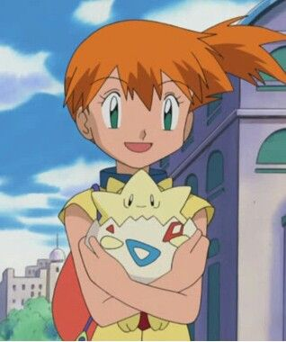
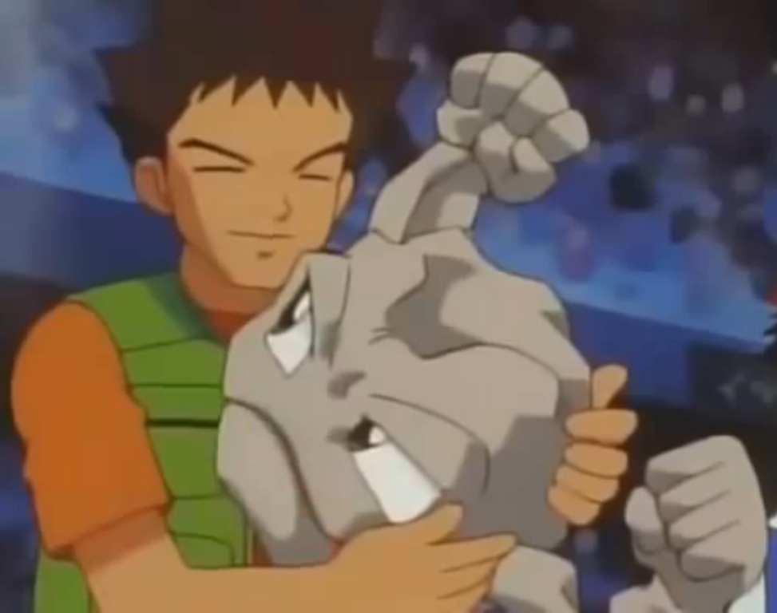

+250
Pokémon Resgatados

Dezenas de Pokémon resgatados nas rotas de Kanto aguardam por uma segunda chance. Encontre seu novo companheiro de jornada hoje mesmo.
Pokémon Resgatados
Adoções Concluídas
Atendimento Veterinário
Contribua com qualquer valor para financiar Berries e Potions para os resgatados em reabilitação.
Fazer DoaçãoAceitamos Pokébolas, mantas, brinquedos e itens de restauração em nosso centro de acolhimento.
Pontos de ColetaDoe seu tempo para ajudar na socialização, passeios e cuidados diários com os Pokémon.
Quero Ser VoluntárioVeja quem já encontrou seu parceiro para a vida toda em nosso centro!

Adoção desde Ovo"Quando o Togepi chocou, ele olhou pra mim e soube que éramos uma família. Adoção é criar esse vínculo único de carinho e proteção todos os dias!"
— Misty, Líder de Ginásio & Tutora
Cuidados Especiais"Muitos acham que Pokémon de Pedra não exigem atenção, mas o Geodude ama um bom polimento e comida de qualidade. Todo Pokémon merece um lar responsável!"
— Brock, Criador Pokémon & Tutor